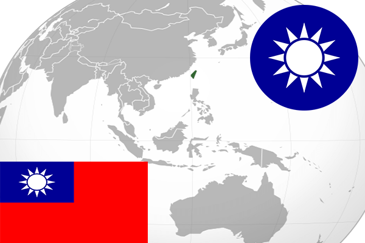

To`liq nomi: Tayvan
Region: Janubiy Sharqiy Osiyo
Poytaxt: Taypey
Maydoni: 35,882 km2
Aholisi: 23,269,633
Aholi zichligi: 648.49/km²
Aholining o`rtacha yoshi: -
Rasmiy tili: xitoy tili
Dini: buddizm
Pul birligi: yangi Tayvan dollari